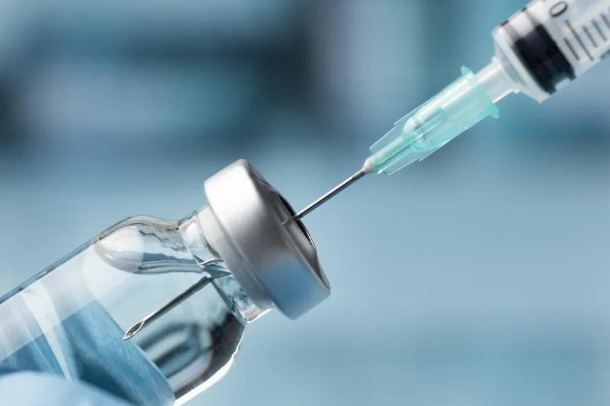
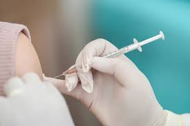

Vacina contra tuberculose (BCG)

Como é aplicada?
Por via intradérmica (injeção sob a pele) de preferência no braço direito. É necessária somente uma dose da vacina e o Ministério da Saúde recomenda uma dose
de reforço de seis a dez anos.
Quem deve tomar?
Todas as crianças.
Vacina oral contra poliomelite

Como é aplicada?
Por via oral. Em três doses, com intervalo de sessenta dias entre cada dose. Cada dose corresponde a duas gotas.
Quem deve tomar?
Todas as crianças menores de cinco anos, a partir de dois meses de idade.
Vacina contra difteria, tétano, coqueluche e miningite

Como é aplicada?
Por injeção via intramuscular no vasto lateral da coxa (em crianças com menos de dois anos) ou na parte superior do braço – músculo deltóide (em crianças com mais de dois anos). Em três doses, com intervalo de sessenta dias entre cada uma.
Quem deve tomar?
Todas as crianças.
Vacina contra sarampo, rubéola e caxumba
Como é aplicada?
Por injeção via subcutânea (sob a pele). Deve ser aplicada na parte superior do braço – músculo deltóide. É necessária somente uma dose da vacina.
Quem deve tomar?
Todas as crianças.
Vacina contra hepatite b

Como é aplicada?
Por injeção via intramuscular no vasto lateral da coxa (em crianças com menos de dois anos) ou na parte superior do braço – músculo deltóide (em crianças com mais de dois anos). São necessárias três doses da vacina: a primeira logo após o nascimento, a segunda trinta dias após a primeira, a terceira seis meses após a primeira.
Quem deve tomar?
Todas as crianças.
Vacina contra sarampo e rubeóla
Como é aplicada?
Por injeção subcutânea na parte superior do braço – músculo deltóide
Quem deve tomar?
Todos os adolescentes que não foram vacinados quando crianças, e, em especial, estudantes e profissionais da área de saúde, profissionais de turismo e quem for viajar para fora do país, uma vez que o sarampo ainda causa epidemias e é muito comum em outros países do mundo
Quer ver mais?
Baixe aqui